Photograph sources & rights
30 original photographs plus two new independent photographs for the incremental experiment. Credit: Library of Congress, Prints and Photographs Division; see each record for its photographer. Catalog titles may contain historical language. They are retained as source evidence.
Rights are assessed per record. “No known restrictions” is the catalog wording, not a guarantee or blanket assertion that all library images are public domain. Metadata snapshot provenance and image download dates are distinct.
| LOC source | Title / collection | Rights | Download / provenance |
|---|---|---|---|
| 2010630676 | Jefferson Memorial, Washington, D.C. Highsmith (Carol M.) Archive | Rights sourceExact catalog statementNo known restrictions on publication. | Downloaded image 2026-11-14T20:00:14Z b92935a7988585895890590c564f1d094d90dc599d039f93f4728d24d4a06e23Fetched 2026-11-14 from LOC Pictures API; full response saved. Saved metadata |
| 2010630677 | Jefferson Memorial, aerial view, Washington, D.C. Highsmith (Carol M.) Archive | Rights sourceExact catalog statementNo known restrictions on publication. | Downloaded image 2026-11-14T20:00:14Z 6628f92b7f93e7678a06daf0241b515286b52ba625d3a561d20b323469f16a5eFetched 2026-11-14 from LOC Pictures API; full response saved. Saved metadata |
| 2010630765 | Aerial view of the Lincoln Memorial, Washington, D.C. Highsmith (Carol M.) Archive | Rights sourceExact catalog statementNo known restrictions on publication. | Downloaded image 2026-11-14T20:00:14Z 2cc98c519af0466eec73923576cc83963c99733a9dc573a50cdef5ad015e4de0Fetched 2026-11-14 from LOC Pictures API; full response saved. Saved metadata |
| 2020720205 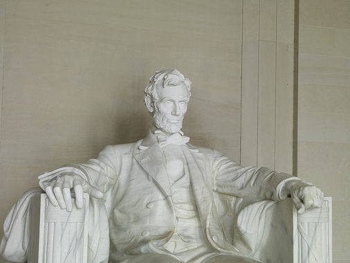 | A rare face-on view of the statue of U.S. president Abraham Lincoln at the Lincoln Memorial on Washington, D.C.'s National Mall Highsmith (Carol M.) Archive | Rights sourceExact catalog statementNo known restrictions on publication. | Downloaded image 2026-11-14T20:00:14Z 038572e2414045e623c328c6597f392b41dc331dd338f9a6ec3b1de33ebdec2eFetched 2026-11-14 from LOC Pictures API; full response saved. Saved metadata |
| 2011631173 | [Golden Gate Bridge, San Francisco, California] Highsmith (Carol M.) Archive | Rights sourceExact catalog statementNo known restrictions on publication. | Downloaded image 2026-11-14T20:00:15Z b94b94d17e579918182db8d08ea6b5179bfb57aa84513adf0b84099632e812baFetched 2026-11-14 from LOC Pictures API; full response saved. Saved metadata |
| 2018701036 | A pedestrian's-eye view on the Brooklyn Bridge, which crosses the East River between New York City's Manhattan and Brooklyn boroughs, or county-like jurisdictions Highsmith (Carol M.) Archive | Rights sourceExact catalog statementNo known restrictions on publication. | Downloaded image 2026-11-14T20:00:15Z 9ee4926fdcfb61cf47c5261f88c40e2b6a55fb6c640073d13f7fae481bea6285Fetched 2026-11-14 from LOC Pictures API; full response saved. Saved metadata |
2011636061 | Gateway Arch, or Gateway to the West, the centerpiece of the Jefferson National Expansion Memorial, St. Louis, Missouri Highsmith (Carol M.) Archive | Rights sourceExact catalog statementNo known restrictions on publication. | Downloaded image 2026-11-14T20:00:15Z 8e8c0f84098edcd9c3ee58369effc2fefa6084f58718b1e9090acf011985b253Fetched 2026-11-14 from LOC Pictures API; full response saved. Saved metadata |
| 2010630616 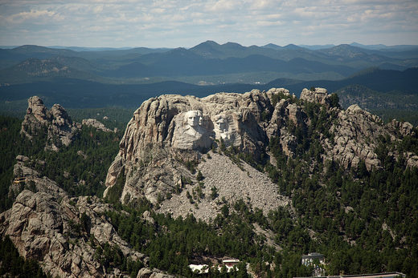 | Aerial view of Mount Rushmore, South Dakota Highsmith (Carol M.) Archive | Rights sourceExact catalog statementNo known restrictions on publication. | Downloaded image 2026-11-14T20:00:15Z 1a4e63ab16deb2923ca60b5a2667bbdba4b08d371b672d1ddfaec67415509e33Fetched 2026-11-14 from LOC Pictures API; full response saved. Saved metadata |
| 2017882041 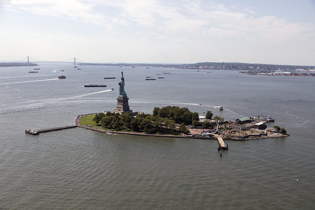 | The Statue of Liberty on Liberty Island, New Jersey Highsmith (Carol M.) Archive | Rights sourceExact catalog statementNo known restrictions on publication. | Downloaded image 2026-11-14T20:00:15Z 2ea91b703739d9119f842e39db8c06cdf2d07e624a2b61142e6e40ee821a4977Fetched 2026-11-14 from LOC Pictures API; full response saved. Saved metadata |
| 2010630408 | Seattle, Washington, view taken from the Space Needle Highsmith (Carol M.) Archive | Rights sourceExact catalog statementNo known restrictions on publication. | Downloaded image 2026-11-14T20:00:15Z 3829e2b1690dfd13c56b22e6714847478d8fc80aac5c61f169f7b551f2ca8cfbFetched 2026-11-14 from LOC Pictures API; full response saved. Saved metadata |
| 2018663548 | Garden at the historic Arizona Biltmore resort in Phoenix, Arizona. Warren McArthur, Jr., and brother Charles McArthur, along with John McEntee Bowman -- the entrepreneur behind the Biltmore Hotel chain -- opened the hotel 1929 Highsmith (Carol M.) Archive | Rights sourceExact catalog statementNo known restrictions on publication. | Downloaded image 2026-11-14T20:00:15Z 8e5ea7cedc5a362eed1f4739f26981e58bce9a970ece7d5b8eb65f634aa5e52fFetched 2026-11-14 from LOC Pictures API; full response saved. Saved metadata |
| 2017877351 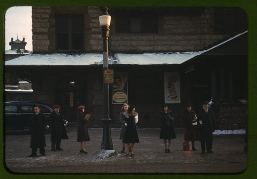 | Commuters, who have just come off the train, waiting for the bus to go home, Lowell, Mass. Farm Security Administration - Office of War Information color slides and transparencies collection (Library of Congress) | Rights sourceExact catalog statementNo known restrictions on publication. | Downloaded image 2026-11-14T20:00:15Z 9977ec6b39b9c5ccfd4e9fcbb0ddf330c34e6abd94c7af1fd1365e811c6c51d7Unchanged LOC item snapshot in token_use/data/public-loc/records.jsonl, acquired 2026-10-04; catalog API limited requests during this experiment. Saved metadata |
| 2017877359 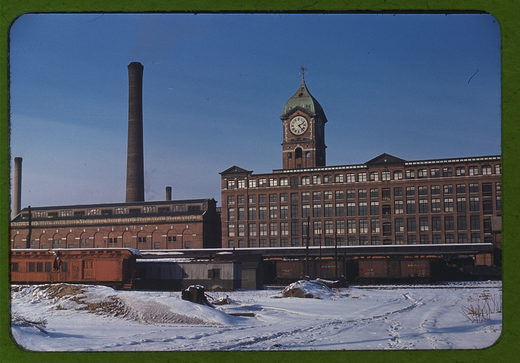 | Railroad cars and factory buildings in Lawrence, Mass. Farm Security Administration - Office of War Information color slides and transparencies collection (Library of Congress) | Rights sourceExact catalog statementNo known restrictions on publication. | Downloaded image 2026-11-14T20:00:15Z f64e0ca0e8ad0be584fc7870deeb03a31fdadc7c598a95a64dc142ced4df1e8eUnchanged LOC item snapshot in token_use/data/public-loc/records.jsonl, acquired 2026-10-04; catalog API limited requests during this experiment. Saved metadata |
| 2017877451 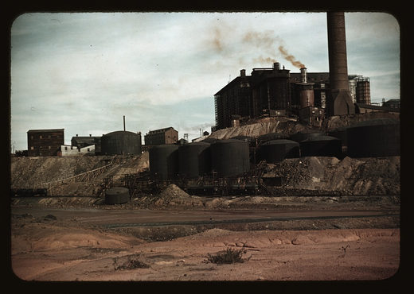 | Copper mining and sulfuric acid plant, Copperhill], Tenn. Farm Security Administration - Office of War Information color slides and transparencies collection (Library of Congress) | Rights sourceExact catalog statementNo known restrictions on publication. | Downloaded image 2026-11-14T20:00:15Z 258d539df21af9ed1cef417bf1301883a3c0fa0e48ee517c8c1da95f614e3710Unchanged LOC item snapshot in token_use/data/public-loc/records.jsonl, acquired 2026-10-04; catalog API limited requests during this experiment. Saved metadata |
| 2017877502 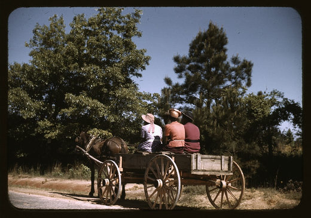 | Going to town on Saturday afternoon, Greene County, Ga. Farm Security Administration - Office of War Information color slides and transparencies collection (Library of Congress) | Rights sourceExact catalog statementNo known restrictions on publication. | Downloaded image 2026-11-14T20:00:16Z 1f5dec1dea4bc9625182300278ce14533d9a958f0ce39e69b4db60746eae8ec1Unchanged LOC item snapshot in token_use/data/public-loc/records.jsonl, acquired 2026-10-04; catalog API limited requests during this experiment. Saved metadata |
| 2017877452 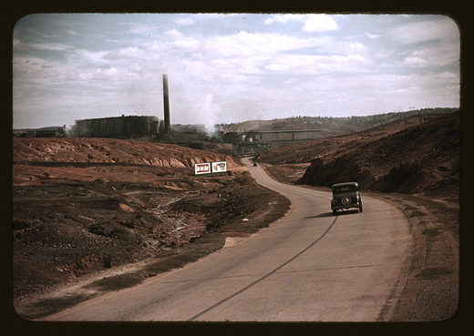 | Copper mining and sulfuric acid plant, Copperhill], Tenn. Farm Security Administration - Office of War Information color slides and transparencies collection (Library of Congress) | Rights sourceExact catalog statementNo known restrictions on publication. | Downloaded image 2026-11-14T20:00:16Z 1b02fb92507f9109870d3959b26b93c01b1df5595cc3b3f2a9e2904dc97be6d5Unchanged LOC item snapshot in token_use/data/public-loc/records.jsonl, acquired 2026-10-04; catalog API limited requests during this experiment. Saved metadata |
| 2017877453 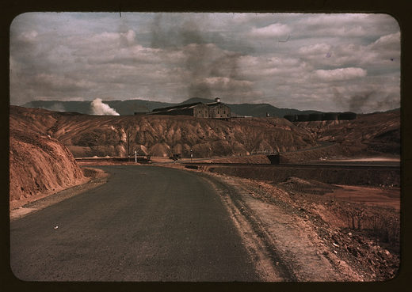 | A train bringing copper ore out of the mine, Ducktown, Tenn. Fumes from smelting copper for sulfuric acid have destroyed all vegetation and eroded the land Farm Security Administration - Office of War Information color slides and transparencies collection (Library of Congress) | Rights sourceExact catalog statementNo known restrictions on publication. | Downloaded image 2026-11-14T20:00:16Z d21c3185f38e67e96648f81f441b4da82e6947f23a6b46ca2f564ff205e78740Unchanged LOC item snapshot in token_use/data/public-loc/records.jsonl, acquired 2026-10-04; catalog API limited requests during this experiment. Saved metadata |
| 2017877454 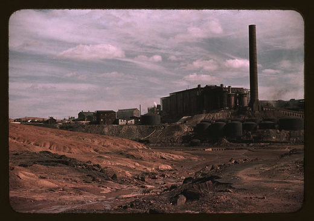 | Copper mining and sulfuric acid plant, Copperhill], Tenn. Farm Security Administration - Office of War Information color slides and transparencies collection (Library of Congress) | Rights sourceExact catalog statementNo known restrictions on publication. | Downloaded image 2026-11-14T20:00:16Z 3cdf5186bf47aeb02c6f90c07ecee6449fe49f701e0ee9cda06edfa43a28b259Unchanged LOC item snapshot in token_use/data/public-loc/records.jsonl, acquired 2026-10-04; catalog API limited requests during this experiment. Saved metadata |
| 2017877476 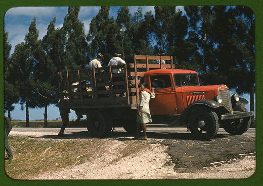 | Southern U.S., Mississippi? Farm Security Administration - Office of War Information color slides and transparencies collection (Library of Congress) | Rights sourceExact catalog statementNo known restrictions on publication. | Downloaded image 2026-11-14T20:00:16Z 461b1c0d22f673975adb3fb336df4b0b7c0cd35799fe5c159de8e8ea85b07870Unchanged LOC item snapshot in token_use/data/public-loc/records.jsonl, acquired 2026-10-04; catalog API limited requests during this experiment. Saved metadata |
2017877477 | Negroes fishing in creek near cotton plantations outside Belzoni, Miss. Farm Security Administration - Office of War Information color slides and transparencies collection (Library of Congress) | Rights sourceExact catalog statementNo known restrictions on publication. | Downloaded image 2026-11-14T20:00:16Z 72f10c39b43fe9d0d0f6406d9c80d8ce07516f9d7c4d4e5a03d95bca52672f7eUnchanged LOC item snapshot in token_use/data/public-loc/records.jsonl, acquired 2026-10-04; catalog API limited requests during this experiment. Saved metadata |
2017877478 | Negroes fishing in creek near cotton plantations outside Belzoni, Miss. Delta Farm Security Administration - Office of War Information color slides and transparencies collection (Library of Congress) | Rights sourceExact catalog statementNo known restrictions on publication. | Downloaded image 2026-11-14T20:00:16Z ea69d95d9269ad64082145d49063483c3ed65f7c883dd1ebeee4a17d7cf15d93Unchanged LOC item snapshot in token_use/data/public-loc/records.jsonl, acquired 2026-10-04; catalog API limited requests during this experiment. Saved metadata |
| 2017877464 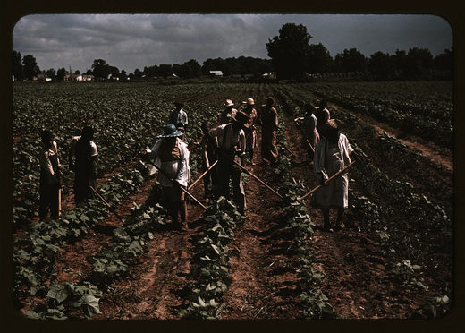 | Bayou Bourbeau plantation operated by Bayou Bourbeau Farmstead Association, a cooperative established through the cooperation of FSA, Natchitoches, La. Farm Security Administration - Office of War Information color slides and transparencies collection (Library of Congress) | Rights sourceExact catalog statementNo known restrictions on publication. | Downloaded image 2026-11-14T20:00:16Z 7eb755e23167e7ac6c8dc4fdf39a85358156c513fe318f2cedfe3f778dd26706Unchanged LOC item snapshot in token_use/data/public-loc/records.jsonl, acquired 2026-10-04; catalog API limited requests during this experiment. Saved metadata |
| 2017877465 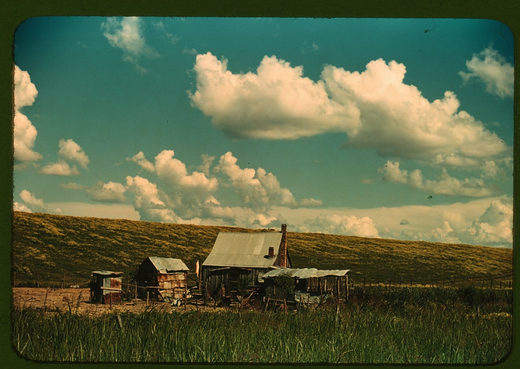 | Negro tenant's home beside the Mississippi River levee, near Lake Providence, La. Farm Security Administration - Office of War Information color slides and transparencies collection (Library of Congress) | Rights sourceExact catalog statementNo known restrictions on publication. | Downloaded image 2026-11-14T20:00:17Z fcea8b7d8ffb5612f18dfb572db3aa6cf7df033debcf35e1ad41c804dcabedb4Unchanged LOC item snapshot in token_use/data/public-loc/records.jsonl, acquired 2026-10-04; catalog API limited requests during this experiment. Saved metadata |
| 2016832837 | [Four unidentified women on tennis court], 5/31/22 National Photo Company Collection (Library of Congress) | Rights sourceExact catalog statementNo known restrictions on publication. For more information, see National Photo Company Collection - Rights and Restrictions Information https://www.loc.gov/rr/print/res/275_npco.html <p>The Library of Congress does not own rights to material in its collections. Therefore, it does not license or charge permission fees for use of such material and cannot grant or deny permission to publish or otherwise distribute the material. </p> <p>Ultimately, it is the researcher's obligation to assess copyright or other use restrictions and obtain permission from third parties when necessary before publishing or otherwise distributing materials found in the Library's collections. </p> <p>For information about reproducing, publishing, and citing material from this collection, as well as access to the original items, see: <a href="//www.loc.gov/rr/print/res/275_npco.html">National Photo Company Collection - Rights and Restrictions Information</a> </p> | Downloaded image 2026-11-14T20:00:17Z 5c6bf6efb1d11cf282b1cf1721bad6420ff469aaad0080e84da75869553160efExisting LOC snapshot token_use/research/data/loc-sample.json, index 0; exact record copied. Parent snapshot hash retained in collection-preparation.json. Saved metadata |
| 2017832209 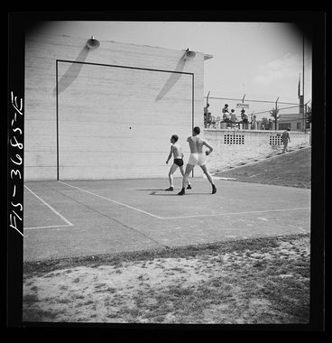 | [Untitled photo, possibly related to: Greenbelt, Maryland. Handball courts behind the swimming pool] Farm Security Administration - Office of War Information photograph collection (Library of Congress) | Rights sourceExact catalog statement<p>The contents of the Library of Congress Farm Security Administration/Office of War Information Black-and-White Negatives are in the public domain and are free to use and reuse.</p> <p> Credit Line: Library of Congress, Prints & Photographs Division, Farm Security Administration/Office of War Information Black-and-White Negatives.</p> <p>For information about reproducing, publishing, and citing material from this collection, as well as access to the original items, see: <a href="https://www.loc.gov/rr/print/res/071_fsab.html">U.S. Farm Security Administration/Office of War Information Black & White Photographs - Rights and Restrictions Information</a> </p> <p>More about <a href="/legal/">Copyright and other Restrictions</a> </p> <p>For guidance about compiling full citations consult <a href="https://www.loc.gov/teachers/usingprimarysources/citing.html">Citing Primary Sources</a>.</p> No known restrictions. For information, see U.S. Farm Security Administration/Office of War Information Black & White Photographs https://www.loc.gov/rr/print/res/071_fsab.html | Downloaded image 2026-11-14T20:00:17Z 756c873ebe52f1a9b13615cbe08d1715851f2cddeb5ad83cfea5a71399fa8d75Existing LOC snapshot token_use/research/data/loc-sample.json, index 1; exact record copied. Parent snapshot hash retained in collection-preparation.json. Saved metadata |
| 2017843211 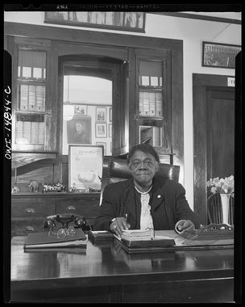 | Daytona Beach, Florida. Bethune-Cookman College. Dr. Mary McLeod Bethune, founder and former president and director of the NYA (National Youth Administration) Negro Relations Farm Security Administration - Office of War Information photograph collection (Library of Congress) | Rights sourceExact catalog statement<p>The contents of the Library of Congress Farm Security Administration/Office of War Information Black-and-White Negatives are in the public domain and are free to use and reuse.</p> <p> Credit Line: Library of Congress, Prints & Photographs Division, Farm Security Administration/Office of War Information Black-and-White Negatives.</p> <p>For information about reproducing, publishing, and citing material from this collection, as well as access to the original items, see: <a href="https://www.loc.gov/rr/print/res/071_fsab.html">U.S. Farm Security Administration/Office of War Information Black & White Photographs - Rights and Restrictions Information</a> </p> <p>More about <a href="/legal/">Copyright and other Restrictions</a> </p> <p>For guidance about compiling full citations consult <a href="https://www.loc.gov/teachers/usingprimarysources/citing.html">Citing Primary Sources</a>.</p> No known restrictions. For information, see U.S. Farm Security Administration/Office of War Information Black & White Photographs https://www.loc.gov/rr/print/res/071_fsab.html | Downloaded image 2026-11-14T20:00:17Z de00d0af3184afac91e299cce7377429dbb7246e75c990d0dfaa119031711381Existing LOC snapshot token_use/research/data/loc-sample.json, index 4; exact record copied. Parent snapshot hash retained in collection-preparation.json. Saved metadata |
| 2017705303 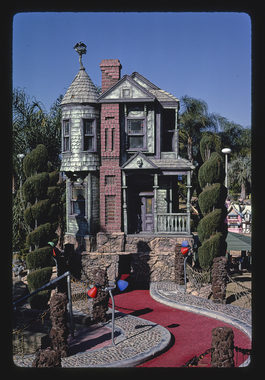 | Haunted house, Castle Park Golf, Polk Street, Riverside, California Margolies, John John Margolies Roadside America photograph archive | Rights sourceExact catalog statementNo known restrictions on publication. For more information, see "John Margolies Roadside America Photograph Archive - Rights and Restrictions Information" https://www.loc.gov/rr/print/res/723_marg.html | Downloaded image 2026-11-14T20:00:17Z ee3dca15da8a48de16fbb700feeb442575327a008b9c4bc4bc9d4c160dbf246cExisting LOC snapshot token_use/research/data/loc-sample.json, index 9; exact record copied. Parent snapshot hash retained in collection-preparation.json. Saved metadata |
| 2017811986 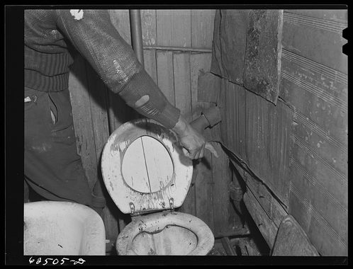 | Bathroom in house which rents for sixteen dollars a month. Norfolk, Virginia Farm Security Administration - Office of War Information Photograph Collection (Library of Congress) | Rights sourceExact catalog statement<p>The contents of the Library of Congress Farm Security Administration/Office of War Information Black-and-White Negatives are in the public domain and are free to use and reuse.</p> <p> Credit Line: Library of Congress, Prints & Photographs Division, Farm Security Administration/Office of War Information Black-and-White Negatives.</p> <p>For information about reproducing, publishing, and citing material from this collection, as well as access to the original items, see: <a href="https://www.loc.gov/rr/print/res/071_fsab.html">U.S. Farm Security Administration/Office of War Information Black & White Photographs - Rights and Restrictions Information</a> </p> <p>More about <a href="/legal/">Copyright and other Restrictions</a> </p> <p>For guidance about compiling full citations consult <a href="https://www.loc.gov/teachers/usingprimarysources/citing.html">Citing Primary Sources</a>.</p> No known restrictions. For information, see U.S. Farm Security Administration/Office of War Information Black & White Photographs https://www.loc.gov/rr/print/res/071_fsab.html | Downloaded image 2026-11-14T20:00:18Z cf8215c8b782cb41666b621072a1feb02d12f30fa2150cd89ad6d8e117b8e1bcExisting LOC snapshot token_use/research/data/loc-sample.json, index 10; exact record copied. Parent snapshot hash retained in collection-preparation.json. Saved metadata |
| 2016804519 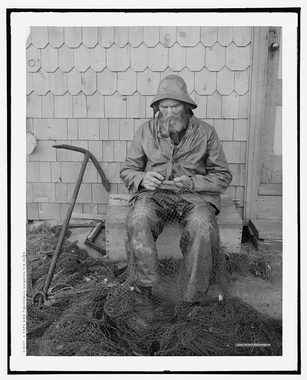 | A Cape Ann fisherman mending his nets Detroit Publishing Company photograph collection (Library of Congress) | Rights sourceExact catalog statementNo known restrictions on publication. <p>The Library of Congress believes that many of the papers in the Detroit Publishing Company collection are in the public domain or have no known copyright restrictions and are free to use and reuse. For example, all photos published in the U.S. more than 95 years ago are in the public domain. The Library has also obtained permission for the use of many other materials, and presents additional materials pursuant to fair use under United States copyright law. Researchers should watch for documents that may be copyrighted (for example, published in the United States less than 95 years ago, or unpublished and the author died less than 70 years ago).</p> <p> You are responsible for deciding whether your use of the items in this collection is legal. You will need written permission from the rightsholders to copy, distribute, or otherwise use copyrighted materials except as allowed by fair use or other statutory exemptions. Some materials may be protected under international law. You may also need permission from holders of other rights, such as publicity and/or privacy rights.</p> <p>Credit Line: Library of Congress, Prints & Photographs Division, Detroit Publishing Company Collection.<br> For information about reproducing, publishing, and citing material from this collection, as well as access to the original items, see: <a href="https://www.loc.gov/rr/print/res/102_det.html">Detroit Publishing Company - Rights and Restrictions Information</a></p> <p>More about <a href="/legal/">Copyright and other Restrictions</a> </p> <p>For guidance about compiling full citations consult <a href="https://www.loc.gov/teachers/usingprimarysources/citing.html">Citing Primary Sources</a>.</p> | Downloaded image 2026-11-14T20:00:18Z 7fc9243359d3ead5babc55e12ebe8796e11981bb3ea03b86e324b50244998516Existing LOC snapshot token_use/research/data/loc-sample.json, index 14; exact record copied. Parent snapshot hash retained in collection-preparation.json. Saved metadata |
| 2003656135 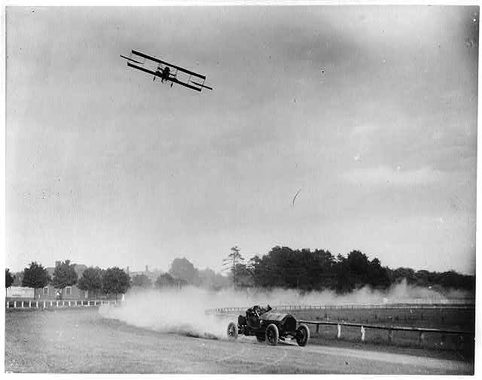 | [Race between Lincoln Beechey in airplane and Barney Oldfield in automobile, going around race track] | Rights sourceExact catalog statementNo known restrictions on publication. | Downloaded image 2026-11-14T20:00:18Z 54e522c970d69c3dabf57771197d232332a632041841777c1d6f32fde31f2e8dExisting LOC snapshot token_use/research/data/loc-sample.json, index 15; exact record copied. Parent snapshot hash retained in collection-preparation.json. Saved metadata |
| 2016816959 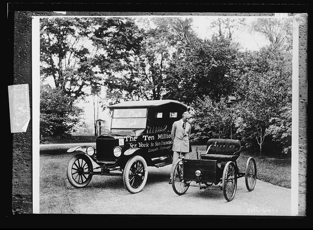 | [First and ten millionth Ford] Detroit Publishing Company photograph collection (Library of Congress) | Rights sourceExact catalog statementNo known restrictions on publication. <p>The Library of Congress believes that many of the papers in the Detroit Publishing Company collection are in the public domain or have no known copyright restrictions and are free to use and reuse. For example, all photos published in the U.S. more than 95 years ago are in the public domain. The Library has also obtained permission for the use of many other materials, and presents additional materials pursuant to fair use under United States copyright law. Researchers should watch for documents that may be copyrighted (for example, published in the United States less than 95 years ago, or unpublished and the author died less than 70 years ago).</p> <p> You are responsible for deciding whether your use of the items in this collection is legal. You will need written permission from the rightsholders to copy, distribute, or otherwise use copyrighted materials except as allowed by fair use or other statutory exemptions. Some materials may be protected under international law. You may also need permission from holders of other rights, such as publicity and/or privacy rights.</p> <p>Credit Line: Library of Congress, Prints & Photographs Division, Detroit Publishing Company Collection.<br> For information about reproducing, publishing, and citing material from this collection, as well as access to the original items, see: <a href="https://www.loc.gov/rr/print/res/102_det.html">Detroit Publishing Company - Rights and Restrictions Information</a></p> <p>More about <a href="/legal/">Copyright and other Restrictions</a> </p> <p>For guidance about compiling full citations consult <a href="https://www.loc.gov/teachers/usingprimarysources/citing.html">Citing Primary Sources</a>.</p> | Downloaded image 2026-11-14T20:00:18Z 952120c7ed0319d5444e2b5ca74892c183dd222f5c28c0ac3dcd09aa6e77e103Existing LOC snapshot token_use/research/data/loc-sample.json, index 21; exact record copied. Parent snapshot hash retained in collection-preparation.json. Saved metadata |
| 2017778455 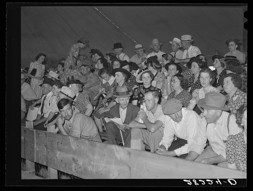 | Farm people at livestock auction. Central Iowa Fair, Marshalltown, Iowa Farm Security Administration - Office of War Information Photograph Collection (Library of Congress) | Rights sourceExact catalog statement<p>The contents of the Library of Congress Farm Security Administration/Office of War Information Black-and-White Negatives are in the public domain and are free to use and reuse.</p> <p> Credit Line: Library of Congress, Prints & Photographs Division, Farm Security Administration/Office of War Information Black-and-White Negatives.</p> <p>For information about reproducing, publishing, and citing material from this collection, as well as access to the original items, see: <a href="https://www.loc.gov/rr/print/res/071_fsab.html">U.S. Farm Security Administration/Office of War Information Black & White Photographs - Rights and Restrictions Information</a> </p> <p>More about <a href="/legal/">Copyright and other Restrictions</a> </p> <p>For guidance about compiling full citations consult <a href="https://www.loc.gov/teachers/usingprimarysources/citing.html">Citing Primary Sources</a>.</p> No known restrictions. For information, see U.S. Farm Security Administration/Office of War Information Black & White Photographs https://www.loc.gov/rr/print/res/071_fsab.html | Downloaded image 2026-11-14T20:00:18Z 48381b6773908c6ee1f8bcb0a3bf6a62e00410bd7e91c023c6241e1a15ee28c2Existing LOC snapshot token_use/research/data/loc-sample.json, index 24; exact record copied. Parent snapshot hash retained in collection-preparation.json. Saved metadata |